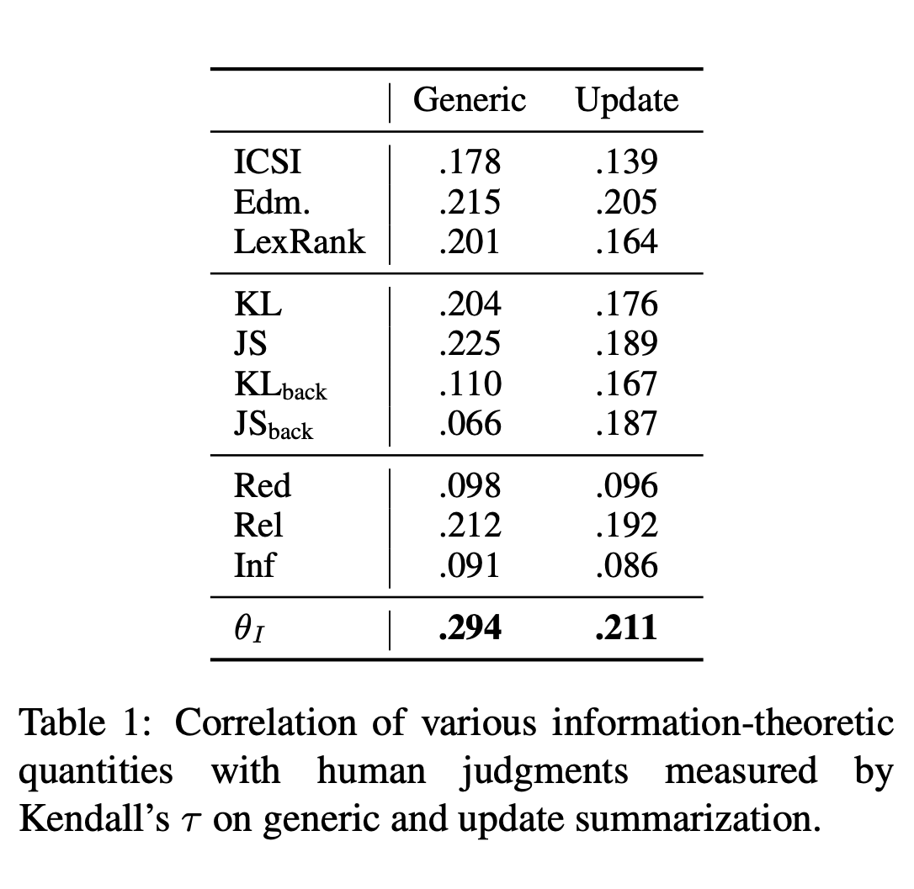

<!DOCTYPE html>


<html lang="en">
  

    <head>
      <meta charset="utf-8" />
        
      <meta
        name="viewport"
        content="width=device-width, initial-scale=1, maximum-scale=1"
      />
      <title>A Simple Theoretical Model of Importance for Summarization |  A Paper Review Blog</title>
  <meta name="generator" content="hexo-theme-ayer">
      
      <link rel="shortcut icon" href="/favicon.ico" />
       
<link rel="stylesheet" href="/dist/main.css">

      <link
        rel="stylesheet"
        href="https://cdn.jsdelivr.net/gh/Shen-Yu/cdn/css/remixicon.min.css"
      />
      
<link rel="stylesheet" href="/css/custom.css">
 
      <script src="https://cdn.jsdelivr.net/npm/pace-js@1.0.2/pace.min.js"></script>
       
 

      <link
        rel="stylesheet"
        href="https://cdn.jsdelivr.net/npm/@sweetalert2/theme-bulma@5.0.1/bulma.min.css"
      />
      <script src="https://cdn.jsdelivr.net/npm/sweetalert2@11.0.19/dist/sweetalert2.min.js"></script>

      <!-- mermaid -->
      
      <style>
        .swal2-styled.swal2-confirm {
          font-size: 1.6rem;
        }
      </style>
    <!-- hexo injector head_end start -->
<link rel="stylesheet" href="https://cdn.jsdelivr.net/npm/katex@0.12.0/dist/katex.min.css">

<link rel="stylesheet" href="https://cdn.jsdelivr.net/npm/hexo-math@4.0.0/dist/style.css">
<!-- hexo injector head_end end --><link href="https://cdn.bootcss.com/KaTeX/0.11.1/katex.min.css" rel="stylesheet" /></head>
  </html>
</html>


<body>
  <div id="app">
    
      
    <main class="content on">
      <section class="outer">
  <article
  id="post-20210901"
  class="article article-type-post"
  itemscope
  itemprop="blogPost"
  data-scroll-reveal
>
  <div class="article-inner">
    
    <header class="article-header">
       
<h1 class="article-title sea-center" style="border-left:0" itemprop="name">
  A Simple Theoretical Model of Importance for Summarization
</h1>
 

      
    </header>
     
    <div class="article-meta">
      <a href="/2021/09/01/20210901/" class="article-date">
  <time datetime="2021-08-31T23:52:30.000Z" itemprop="datePublished">2021-09-01</time>
</a> 
  <div class="article-category">
    <a class="article-category-link" href="/categories/Intensive-Reading/">Intensive Reading</a>
  </div>
  
<div class="word_count">
    <span class="post-time">
        <span class="post-meta-item-icon">
            <i class="ri-quill-pen-line"></i>
            <span class="post-meta-item-text"> Word count:</span>
            <span class="post-count">1.4k</span>
        </span>
    </span>

    <span class="post-time">
        &nbsp; | &nbsp;
        <span class="post-meta-item-icon">
            <i class="ri-book-open-line"></i>
            <span class="post-meta-item-text"> Reading time≈</span>
            <span class="post-count">8 min</span>
        </span>
    </span>
</div>
 
    </div>
      
    <div class="tocbot"></div>


  
    <div class="article-entry" itemprop="articleBody">
       
  <h3 id="author">Author</h3>
<ul>
<li>Maxime Peyard, EPFL</li>
</ul>
<p><br></p>
<h3 id="abstract-from-the-paper">Abstract from the Paper</h3>
<blockquote>
<p>Research on summarization has mainly been driven by empirical approaches, crafting systems to perform well on standard datasets with the notion of information Importance remaining latent. We argue that establishing theoretical models of <em>Importance</em> will advance our understanding of the task and help to further improve summarization systems. To this end, we propose simple but rigorous definitions of several concepts that were previously used only intuitively in summarization: <em>Redundancy, Relevance, and Informativeness</em>. Importance arises as a single quantity naturally unifying these concepts. Additionally, we provide intuitions to interpret the proposed quantities and experiments to demonstrate the potential of the framework to inform and guide subsequent works.<a href="#fn1" class="footnote-ref" id="fnref1" role="doc-noteref"><sup>1</sup></a></p>
</blockquote>
<p><br></p>
<h3 id="key-points">Key Points</h3>
<ul>
<li><strong><em>Summarization is a lossy semantic compression depending on background knowledge.</em></strong><a href="#fn2" class="footnote-ref" id="fnref2" role="doc-noteref"><sup>2</sup></a> The author introduced concepts from Information Theory to evaluate the semantic loss instead of using vague empirical evaluation metrics.</li>
<li>The Importance of a summary consists of Redundancy, Relevance and Informativeness</li>
<li>Building a theoretical model of Improtance could accelerate future works on summarisation task.</li>
</ul>
<span id="more"></span>
<p><br></p>
<h3 id="assumption">Assumption</h3>
<p>Follwing the general assumptions in Information Theory, the proposed framework bases on the postulate that the atomic piece of information exists, which is called <strong><em>semantic unit</em></strong>. Hence, an input text <span class="math inline">\(X\)</span> can be presented by a probility distribution <span class="math inline">\(P_X\)</span> over the whole set of semantic units <span class="math inline">\(\Omega\)</span>.</p>
<p>In this paper, the author interpreted the meaning of distribution from 3 different angles:</p>
<ul>
<li>Frequency distribution of semantic units in the text</li>
<li>The normalized likelihood that <span class="math inline">\(X\)</span> entails an unit <span class="math inline">\(\omega_i\)</span></li>
<li>The normalized contribution that <span class="math inline">\(\omega_i\)</span> gives to <span class="math inline">\(X\)</span></li>
</ul>
<p>Therefore, the author stated that</p>
<blockquote>
<p><strong><em>Meaning arises from a set of independent and discrete units</em></strong>.<a href="#fn3" class="footnote-ref" id="fnref3" role="doc-noteref"><sup>3</sup></a></p>
</blockquote>
<p>And the Redundancy, Relevance and Informativeness could be calculated on these atomic semantic units to evaluate generated summaries.</p>
<h3 id="measure-metrics">Measure Metrics</h3>
<p>The author first explained how to evaluate <em>Redundancy, Relevance and Informativeness</em> of given summaries. Following their requirements, the author then derived the formula of <em>Importance</em>.</p>
<h4 id="redundancy">Redundancy</h4>
<p>According to Shannon's Information Theory, the amount of information contained in summaries can be measured by entropy:</p>
<p><span class="math display">\[H(S) = -\sum_{\omega_i}P_S(\omega_i) \cdot \log{P_S(\omega_i)} \tag{1}\label{entropy}\]</span></p>
<p>Entropy function would reach maximum when the given distribution is uniform, which means each semantic unit appears in the text equally. <strong><em>The more redundant the content is, the less value <span class="math inline">\(\eqref{entropy}\)</span> will be.</em></strong> So, we can use the negative entropy to evaluate the redundancy:</p>
<p><span class="math display">\[Red(s) = -H(S) \tag{2}\label{redundancy}\]</span></p>
<h4 id="relevance">Relevance</h4>
<p>In summarisation task, undoutedly, system outputs should be coherent and consistent with the source document(s). In other words, the generated summaries are supposed to be semantically similar to input articles, which means they ought to have analogous probability distribution over the semantic unit sets <span class="math inline">\(\Omega\)</span>, i.e., <span class="math inline">\(P_S\approx P_D\)</span>.</p>
<p>In both NLP and Information Theory, Cross Entropy is often used to evaluate how diverse two distribitions are. It can be interpreted as the average suprise of observing the summary <span class="math inline">\(S\)</span> while expecting the input document <span class="math inline">\(D\)</span>. Therefore, the <em>Relevance</em> can be evaluated by the additive inverse of Cross Entropy:</p>
<p><span class="math display">\[Rel(S,D) = -CE(S,D) = \sum_{\omega_i}P_S(\omega_i) \cdot \log{P_D(\omega_i)} \tag{3}\label{relevance}\]</span></p>
<h5 id="kl-divergence">KL Divergence</h5>
<p>In Information Theory, the information loss (uncertainty) of inferencing <span class="math inline">\(D\)</span> by observing <span class="math inline">\(S\)</span> is called <strong>Kullback–Leibler divergence</strong> (KL divergence). From its definition, we can derive its formula:</p>
<p><span class="math display">\[KL(S||D) = CE(S,D) - H(S)\]</span></p>
<p>Thus, in summarisation task, we have:</p>
<p><span class="math display">\[-KL(S||D) = Rel(S,D) - Red(S) \tag{4}\label{KL}\]</span></p>
<p>When training a summariser via minimising KL divergence, it will maximise <em>Relevance</em> and minimise <em>Redundancy</em> at the same time.</p>
<blockquote>
<p>In fact, this is an instance of the Kullback Minimum Description Principle (MDI)<a href="#fn4" class="footnote-ref" id="fnref4" role="doc-noteref"><sup>4</sup></a>, a generalization of the Maximum Entropy Principle<a href="#fn5" class="footnote-ref" id="fnref5" role="doc-noteref"><sup>5</sup></a>: the summary minimizing the KL divergence is the least biased (i.e., least redundant or with highest entropy) summary matching <span class="math inline">\(D\)</span>. In other words, this summary fits <span class="math inline">\(D\)</span> while inducing a minimum amount of new information. Indeed, any new information is necessarily biased since it does not arise from observations in the sources. The MDI principle and KL divergence unify Redundancy and Relevance.<a href="#fn6" class="footnote-ref" id="fnref6" role="doc-noteref"><sup>6</sup></a></p>
</blockquote>
<h4 id="informativeness">Informativeness</h4>
<p>Sometimes, users have their own knowledge background <span class="math inline">\(K\)</span>. An informative summary should contain information that is not awared by the user. From the semantic unit perspective, <span class="math inline">\(P_S\)</span> should vary from <span class="math inline">\(P_K\)</span>. Hence, Cross Entropy plays a role here:</p>
<p><span class="math display">\[Inf(S,K) = -\sum_{\omega_i}P_S(\omega_i) \cdot \log{P_K(\omega_i)} \tag{5}\label{informativeness}\]</span></p>
<p>Opposite to <em>Relevance</em>, we expect a high Cross Entropy value this time, which means a large amount of new information brought by the summary. Through <em>Informativeness</em>, interaction is enabled by setting a low probabability to users' queries <span class="math inline">\(Q\)</span>.</p>
<h4 id="importance">Importance</h4>
<p>To sum these measurement up by weight, we need to calculate their relative importance. According to the definition, a good summary should contain information from <span class="math inline">\(D\)</span> and bring new information comparing to users' background knowledge <span class="math inline">\(K\)</span>. In other words, we expect semantic units that are frequent in <span class="math inline">\(D\)</span> but rare in <span class="math inline">\(K\)</span>. The author formulated it as below:</p>
<ul>
<li><em>Informativeness</em> <span class="math inline">\(\forall i \neq j\)</span>, if <span class="math inline">\(d_i = d_j\)</span> and <span class="math inline">\(k_i &gt; k_j\)</span> then <span class="math inline">\(f(d_i, k_i) &lt; f(d_j, k_j)\)</span></li>
<li><em>Relevance</em> <span class="math inline">\(\forall i \neq j\)</span>, if <span class="math inline">\(d_i &gt; d_j\)</span> and <span class="math inline">\(k_i = k_j\)</span> then <span class="math inline">\(f(d_i, k_i) &gt; f(d_j, k_j)\)</span></li>
<li>Additivity <span class="math inline">\(I(f(d_i, k_i)) \equiv \alpha I(d_i) + \beta I(k_i)\)</span></li>
<li>Normalisation <span class="math inline">\(\sum_i f(d_i, k_i) = 1\)</span></li>
</ul>
<p><span class="math inline">\(f\)</span> is the importance of unit <span class="math inline">\(\omega_i\)</span> considering <span class="math inline">\(D\)</span> and <span class="math inline">\(K\)</span>. And <span class="math inline">\(f\)</span> can be proved that it has the form:</p>
<p><span class="math display">\[P_{\frac{D}{K}}(\omega_i) = \frac{1}{C} \cdot \frac{d^{\alpha}_i}{k^{\beta}_i} \tag{6}\label{summary}\]</span></p>
<p><span class="math inline">\(C\)</span> is the normalising constant. <span class="math inline">\(\alpha\)</span> and <span class="math inline">\(\beta\)</span> are the strength of <em>Relevance</em> and <em>Informativeness</em> respectively.</p>
<p>The candidate summaries' distributions should appproximate <span class="math inline">\(P_{\frac{D}{K}}(\omega_i)\)</span>, which reflect the relative importance of each units appearing in the summaries. We can measure the ability of summariser by its entropy <span class="math inline">\(H(P_{\frac{D}{K}}(\omega_i))\)</span>, which is proportional to the potential number of good summaries.</p>
<p>Considering the requirement of redundancy, the best summary should be the solution of:</p>
<p><span class="math display">\[S^* = argmin_S KL(S||P_{\frac{D}{K}}(\omega_i)) \tag{7}\label{best_s}\]</span></p>
<p>Therefore, we note <em>Importance</em> as:</p>
<p><span class="math display">\[\theta_I(S,D,K) = -KL(S||P_{\frac{D}{K}}(\omega_i)) \equiv -Red(S) + \alpha Rel(S,D) + \beta Inf(S,K) \tag{8}\label{importance}\]</span></p>
<p>The cross-entropy between <span class="math inline">\(S\)</span> and <span class="math inline">\(D\)</span>, and <span class="math inline">\(S\)</span> and <span class="math inline">\(K\)</span> have been calculated and interpreted. It can be calculated between <span class="math inline">\(D\)</span> and <span class="math inline">\(K\)</span> as well, which is called <em>Potential Information</em>:</p>
<p><span class="math display">\[PI_K(D)=CE(D,K)=-\sum_{\omega_i}P_D(\omega_i) \cdot \log{P_K(\omega_i)} \tag{8}\label{potential_information}\]</span></p>
<p><em>Potential Information</em> indicates the expectation of surprise by observing <span class="math inline">\(D\)</span> while knowing <span class="math inline">\(K\)</span> already. Naturally, it is the upper boundary of <em>Informativeness</em>, i.e., the maximum new information that input documents can bring to the user.</p>
<h3 id="experiments">Experiments</h3>
<p></p>
<ul>
<li>Dataset: TAC-2008 and TAC-2009</li>
<li>Evaluation: Human judgments measured by Kendall's <span class="math inline">\(\tau\)</span></li>
<li>Conclusion: <em>Importance</em> method outperforms all the baselines in both generic and update tasks. And <em>Relevance, Redundancy and Informativeness</em> are not particularly strong respectively, but powerful when combined together.</li>
</ul>
<h3 id="findings">Findings</h3>
<ul>
<li>Current works basically follow the atomic semantic unit assumption.</li>
<li>By introducing concepts from Information Theory, evaluation metrics of summary quality can be both mathematically and practically meaningful.</li>
<li>I think proposed metrics in this paper are mainly designed for extractive summarisation methods, because text rephrasing is common in abstractive summarisation method. Maybe it can be adapted in future works.</li>
<li>In this paper, negative Cross Entropy is used to describe the relevance between source documents and summaries, because its value reflect the diversity between two distributions. Mutual Information, as another important concept in Information Theory, is potential to become a evaluation metric as well.</li>
</ul>
<h3 id="reference">Reference</h3>
<section class="footnotes" role="doc-endnotes">
<hr />
<ol>
<li id="fn1" role="doc-endnote"><p><a target="_blank" rel="noopener" href="https://arxiv.org/abs/1801.08991">Peyrard, M. (2018). A simple theoretical model of importance for summarization. arXiv preprint arXiv:1801.08991.</a><a href="#fnref1" class="footnote-back" role="doc-backlink">↩︎</a></p></li>
<li id="fn2" role="doc-endnote"><p><a target="_blank" rel="noopener" href="https://arxiv.org/abs/1801.08991">Peyrard, M. (2018). A simple theoretical model of importance for summarization. arXiv preprint arXiv:1801.08991.</a><a href="#fnref2" class="footnote-back" role="doc-backlink">↩︎</a></p></li>
<li id="fn3" role="doc-endnote"><p><a target="_blank" rel="noopener" href="https://arxiv.org/abs/1801.08991">Peyrard, M. (2018). A simple theoretical model of importance for summarization. arXiv preprint arXiv:1801.08991.</a><a href="#fnref3" class="footnote-back" role="doc-backlink">↩︎</a></p></li>
<li id="fn4" role="doc-endnote"><p><a target="_blank" rel="noopener" href="https://www.jstor.org/stable/2236703">Kullback, S., &amp; Leibler, R. A. (1951). On information and sufficiency. The annals of mathematical statistics, 22(1), 79-86.</a><a href="#fnref4" class="footnote-back" role="doc-backlink">↩︎</a></p></li>
<li id="fn5" role="doc-endnote"><p><a target="_blank" rel="noopener" href="https://journals.aps.org/pr/abstract/10.1103/PhysRev.106.620">Jaynes, E. T. (1957). Information theory and statistical mechanics. Physical review, 106(4), 620.</a><a href="#fnref5" class="footnote-back" role="doc-backlink">↩︎</a></p></li>
<li id="fn6" role="doc-endnote"><p><a target="_blank" rel="noopener" href="https://arxiv.org/abs/1801.08991">Peyrard, M. (2018). A simple theoretical model of importance for summarization. arXiv preprint arXiv:1801.08991.</a><a href="#fnref6" class="footnote-back" role="doc-backlink">↩︎</a></p></li>
</ol>
</section>
 
      <!-- reward -->
      
      <div id="reword-out">
        <div id="reward-btn">
          Donate
        </div>
      </div>
      
    </div>
    

    <!-- copyright -->
    
    <div class="declare">
      <ul class="post-copyright">
        <li>
          <i class="ri-copyright-line"></i>
          <strong>Copyright： </strong>
          
          Copyright is owned by the author. For commercial reprints, please contact the author for authorization. For non-commercial reprints, please indicate the source.
          
        </li>
      </ul>
    </div>
    
    <footer class="article-footer">
       
<div class="share-btn">
      <span class="share-sns share-outer">
        <i class="ri-share-forward-line"></i>
        Share
      </span>
      <div class="share-wrap">
        <i class="arrow"></i>
        <div class="share-icons">
          
          <a class="weibo share-sns" href="javascript:;" data-type="weibo">
            <i class="ri-weibo-fill"></i>
          </a>
          <a class="weixin share-sns wxFab" href="javascript:;" data-type="weixin">
            <i class="ri-wechat-fill"></i>
          </a>
          <a class="qq share-sns" href="javascript:;" data-type="qq">
            <i class="ri-qq-fill"></i>
          </a>
          <a class="douban share-sns" href="javascript:;" data-type="douban">
            <i class="ri-douban-line"></i>
          </a>
          <!-- <a class="qzone share-sns" href="javascript:;" data-type="qzone">
            <i class="icon icon-qzone"></i>
          </a> -->
          
          <a class="facebook share-sns" href="javascript:;" data-type="facebook">
            <i class="ri-facebook-circle-fill"></i>
          </a>
          <a class="twitter share-sns" href="javascript:;" data-type="twitter">
            <i class="ri-twitter-fill"></i>
          </a>
          <a class="google share-sns" href="javascript:;" data-type="google">
            <i class="ri-google-fill"></i>
          </a>
        </div>
      </div>
</div>

<div class="wx-share-modal">
    <a class="modal-close" href="javascript:;"><i class="ri-close-circle-line"></i></a>
    <p>扫一扫，分享到微信</p>
    <div class="wx-qrcode">
      
    </div>
</div>

<div id="share-mask"></div>  
  <ul class="article-tag-list" itemprop="keywords"><li class="article-tag-list-item"><a class="article-tag-list-link" href="/tags/NLG/" rel="tag">NLG</a></li><li class="article-tag-list-item"><a class="article-tag-list-link" href="/tags/NLP/" rel="tag">NLP</a></li><li class="article-tag-list-item"><a class="article-tag-list-link" href="/tags/Summarisation/" rel="tag">Summarisation</a></li></ul>

    </footer>
  </div>

   
  <nav class="article-nav">
    
    
      <a href="/2021/08/31/build-blog/" class="article-nav-link">
        <strong class="article-nav-caption">Next Post</strong>
        <div class="article-nav-title">搭建博客全过程记录/The Whole Process of Building A Blog via Hexo</div>
      </a>
    
  </nav>

  
   
     
</article>

</section>
      <footer class="footer">
  <div class="outer">
    <ul>
      <li>
        Copyrights &copy;
        2021
        <i class="ri-heart-fill heart_icon"></i> Yuxuan Ye
      </li>
    </ul>
    <ul>
      <li>
        
      </li>
    </ul>
    <ul>
      <li>
        
        
        <span>
  <span><i class="ri-user-3-fill"></i>Visitors:<span id="busuanzi_value_site_uv"></span></span>
  <span class="division">|</span>
  <span><i class="ri-eye-fill"></i>Views:<span id="busuanzi_value_page_pv"></span></span>
</span>
        
      </li>
    </ul>
    <ul>
      
    </ul>
    <ul>
      
    </ul>
    <ul>
      <li>
        <!-- cnzz统计 -->
        
      </li>
    </ul>
  </div>
</footer>    
    </main>
    <div class="float_btns">
      <div class="totop" id="totop">
  <i class="ri-arrow-up-line"></i>
</div>

<div class="todark" id="todark">
  <i class="ri-moon-line"></i>
</div>

    </div>
    <aside class="sidebar on">
      <button class="navbar-toggle"></button>
<nav class="navbar">
  
  <div class="logo">
    <a href="/"></a>
  </div>
  
  <ul class="nav nav-main">
    
    <li class="nav-item">
      <a class="nav-item-link" href="/">Home</a>
    </li>
    
    <li class="nav-item">
      <a class="nav-item-link" href="/archives">Archives</a>
    </li>
    
    <li class="nav-item">
      <a class="nav-item-link" href="/categories">Categories</a>
    </li>
    
    <li class="nav-item">
      <a class="nav-item-link" href="/tags">Tags</a>
    </li>
    
    <li class="nav-item">
      <a class="nav-item-link" href="/about">About</a>
    </li>
    
  </ul>
</nav>
<nav class="navbar navbar-bottom">
  <ul class="nav">
    <li class="nav-item">
      
      <a class="nav-item-link nav-item-search"  title="Search">
        <i class="ri-search-line"></i>
      </a>
      
      
    </li>
  </ul>
</nav>
<div class="search-form-wrap">
  <div class="local-search local-search-plugin">
  <input type="search" id="local-search-input" class="local-search-input" placeholder="Search...">
  <div id="local-search-result" class="local-search-result"></div>
</div>
</div>
    </aside>
    <div id="mask"></div>

<!-- #reward -->
<div id="reward">
  <span class="close"><i class="ri-close-line"></i></span>
  <p class="reward-p"><i class="ri-cup-line"></i>Buy me a cup of flat white~</p>
  <div class="reward-box">
    
    <div class="reward-item">
      
      <span class="reward-type">支付宝</span>
    </div>
    
    
    <div class="reward-item">
      
      <span class="reward-type">微信</span>
    </div>
    
  </div>
</div>
    
<script src="/js/jquery-3.6.0.min.js"></script>
 
<script src="/js/lazyload.min.js"></script>

<!-- Tocbot -->
 
<script src="/js/tocbot.min.js"></script>

<script>
  tocbot.init({
    tocSelector: ".tocbot",
    contentSelector: ".article-entry",
    headingSelector: "h1, h2, h3, h4, h5, h6",
    hasInnerContainers: true,
    scrollSmooth: true,
    scrollContainer: "main",
    positionFixedSelector: ".tocbot",
    positionFixedClass: "is-position-fixed",
    fixedSidebarOffset: "auto",
  });
</script>

<script src="https://cdn.jsdelivr.net/npm/jquery-modal@0.9.2/jquery.modal.min.js"></script>
<link
  rel="stylesheet"
  href="https://cdn.jsdelivr.net/npm/jquery-modal@0.9.2/jquery.modal.min.css"
/>
<script src="https://cdn.jsdelivr.net/npm/justifiedGallery@3.7.0/dist/js/jquery.justifiedGallery.min.js"></script>

<script src="/dist/main.js"></script>

<!-- ImageViewer -->
 <!-- Root element of PhotoSwipe. Must have class pswp. -->
<div class="pswp" tabindex="-1" role="dialog" aria-hidden="true">

    <!-- Background of PhotoSwipe. 
         It's a separate element as animating opacity is faster than rgba(). -->
    <div class="pswp__bg"></div>

    <!-- Slides wrapper with overflow:hidden. -->
    <div class="pswp__scroll-wrap">

        <!-- Container that holds slides. 
            PhotoSwipe keeps only 3 of them in the DOM to save memory.
            Don't modify these 3 pswp__item elements, data is added later on. -->
        <div class="pswp__container">
            <div class="pswp__item"></div>
            <div class="pswp__item"></div>
            <div class="pswp__item"></div>
        </div>

        <!-- Default (PhotoSwipeUI_Default) interface on top of sliding area. Can be changed. -->
        <div class="pswp__ui pswp__ui--hidden">

            <div class="pswp__top-bar">

                <!--  Controls are self-explanatory. Order can be changed. -->

                <div class="pswp__counter"></div>

                <button class="pswp__button pswp__button--close" title="Close (Esc)"></button>

                <button class="pswp__button pswp__button--share" style="display:none" title="Share"></button>

                <button class="pswp__button pswp__button--fs" title="Toggle fullscreen"></button>

                <button class="pswp__button pswp__button--zoom" title="Zoom in/out"></button>

                <!-- Preloader demo http://codepen.io/dimsemenov/pen/yyBWoR -->
                <!-- element will get class pswp__preloader--active when preloader is running -->
                <div class="pswp__preloader">
                    <div class="pswp__preloader__icn">
                        <div class="pswp__preloader__cut">
                            <div class="pswp__preloader__donut"></div>
                        </div>
                    </div>
                </div>
            </div>

            <div class="pswp__share-modal pswp__share-modal--hidden pswp__single-tap">
                <div class="pswp__share-tooltip"></div>
            </div>

            <button class="pswp__button pswp__button--arrow--left" title="Previous (arrow left)">
            </button>

            <button class="pswp__button pswp__button--arrow--right" title="Next (arrow right)">
            </button>

            <div class="pswp__caption">
                <div class="pswp__caption__center"></div>
            </div>

        </div>

    </div>

</div>

<link rel="stylesheet" href="https://cdn.jsdelivr.net/npm/photoswipe@4.1.3/dist/photoswipe.min.css">
<link rel="stylesheet" href="https://cdn.jsdelivr.net/npm/photoswipe@4.1.3/dist/default-skin/default-skin.min.css">
<script src="https://cdn.jsdelivr.net/npm/photoswipe@4.1.3/dist/photoswipe.min.js"></script>
<script src="https://cdn.jsdelivr.net/npm/photoswipe@4.1.3/dist/photoswipe-ui-default.min.js"></script>

<script>
    function viewer_init() {
        let pswpElement = document.querySelectorAll('.pswp')[0];
        let $imgArr = document.querySelectorAll(('.article-entry img:not(.reward-img)'))

        $imgArr.forEach(($em, i) => {
            $em.onclick = () => {
                // slider展开状态
                // todo: 这样不好，后面改成状态
                if (document.querySelector('.left-col.show')) return
                let items = []
                $imgArr.forEach(($em2, i2) => {
                    let img = $em2.getAttribute('data-idx', i2)
                    let src = $em2.getAttribute('data-target') || $em2.getAttribute('src')
                    let title = $em2.getAttribute('alt')
                    // 获得原图尺寸
                    const image = new Image()
                    image.src = src
                    items.push({
                        src: src,
                        w: image.width || $em2.width,
                        h: image.height || $em2.height,
                        title: title
                    })
                })
                var gallery = new PhotoSwipe(pswpElement, PhotoSwipeUI_Default, items, {
                    index: parseInt(i)
                });
                gallery.init()
            }
        })
    }
    viewer_init()
</script> 
<!-- MathJax -->
 <script type="text/x-mathjax-config">
  MathJax.Hub.Config({
      tex2jax: {
          inlineMath: [ ['$','$'], ["\\(","\\)"]  ],
          processEscapes: true,
          skipTags: ['script', 'noscript', 'style', 'textarea', 'pre', 'code']
      }
  });

  MathJax.Hub.Queue(function() {
      var all = MathJax.Hub.getAllJax(), i;
      for(i=0; i < all.length; i += 1) {
          all[i].SourceElement().parentNode.className += ' has-jax';
      }
  });
</script>

<script src="https://cdn.jsdelivr.net/npm/mathjax@2.7.6/unpacked/MathJax.js?config=TeX-AMS-MML_HTMLorMML"></script>
<script>
  var ayerConfig = {
    mathjax: true,
  };
</script>

<!-- Katex -->

<!-- busuanzi  -->
 
<script src="/js/busuanzi-2.3.pure.min.js"></script>
 
<!-- ClickLove -->

<!-- ClickBoom1 -->

<!-- ClickBoom2 -->

<!-- CodeCopy -->
 
<link rel="stylesheet" href="/css/clipboard.css">
 <script src="https://cdn.jsdelivr.net/npm/clipboard@2/dist/clipboard.min.js"></script>
<script>
  function wait(callback, seconds) {
    var timelag = null;
    timelag = window.setTimeout(callback, seconds);
  }
  !function (e, t, a) {
    var initCopyCode = function(){
      var copyHtml = '';
      copyHtml += '<button class="btn-copy" data-clipboard-snippet="">';
      copyHtml += '<i class="ri-file-copy-2-line"></i><span>COPY</span>';
      copyHtml += '</button>';
      $(".highlight .code pre").before(copyHtml);
      $(".article pre code").before(copyHtml);
      var clipboard = new ClipboardJS('.btn-copy', {
        target: function(trigger) {
          return trigger.nextElementSibling;
        }
      });
      clipboard.on('success', function(e) {
        let $btn = $(e.trigger);
        $btn.addClass('copied');
        let $icon = $($btn.find('i'));
        $icon.removeClass('ri-file-copy-2-line');
        $icon.addClass('ri-checkbox-circle-line');
        let $span = $($btn.find('span'));
        $span[0].innerText = 'COPIED';
        
        wait(function () { // 等待两秒钟后恢复
          $icon.removeClass('ri-checkbox-circle-line');
          $icon.addClass('ri-file-copy-2-line');
          $span[0].innerText = 'COPY';
        }, 2000);
      });
      clipboard.on('error', function(e) {
        e.clearSelection();
        let $btn = $(e.trigger);
        $btn.addClass('copy-failed');
        let $icon = $($btn.find('i'));
        $icon.removeClass('ri-file-copy-2-line');
        $icon.addClass('ri-time-line');
        let $span = $($btn.find('span'));
        $span[0].innerText = 'COPY FAILED';
        
        wait(function () { // 等待两秒钟后恢复
          $icon.removeClass('ri-time-line');
          $icon.addClass('ri-file-copy-2-line');
          $span[0].innerText = 'COPY';
        }, 2000);
      });
    }
    initCopyCode();
  }(window, document);
</script>
 
<!-- CanvasBackground -->

<script>
  if (window.mermaid) {
    mermaid.initialize({ theme: "forest" });
  }
</script>


    
    

  </div>
<script type="text/x-mathjax-config">
    MathJax.Hub.Config({
        tex2jax: {
            inlineMath: [ ["$","$"], ["\\(","\\)"] ],
            skipTags: ['script', 'noscript', 'style', 'textarea', 'pre', 'code'],
            processEscapes: true
        }
    });
    MathJax.Hub.Queue(function() {
        var all = MathJax.Hub.getAllJax();
        for (var i = 0; i < all.length; ++i)
            all[i].SourceElement().parentNode.className += ' has-jax';
    });
</script>
<script src="https://cdnjs.cloudflare.com/ajax/libs/mathjax/2.7.1/MathJax.js?config=TeX-MML-AM_CHTML"></script>
<script src="/live2dw/lib/L2Dwidget.min.js?094cbace49a39548bed64abff5988b05"></script><script>L2Dwidget.init({"pluginRootPath":"live2dw/","pluginJsPath":"lib/","pluginModelPath":"assets/","tagMode":false,"debug":false,"model":{"jsonPath":"/live2dw/assets/tororo.model.json"},"display":{"position":"right","width":145,"height":315},"mobile":{"show":true,"scale":0.5},"react":{"opacityDefault":0.7,"opacityOnHover":0.8},"log":false});</script></body>

</html>